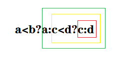

C语言运算符优先级表
运算符优先级: !> 算术运算符 > 关系运算符 > (&& ||) 逻辑运算符> 条件运算符> 赋值运算符 > 逗号运算符
逗号表达式运算顺序
//注意逗号表达式的运算顺序是从左往右运算
int b;
int a = (b = 8,b*4); // a = 32
不能被重载的符号
1. . （成员访问运算符）
2. .* （成员指针访问运算符）
3. :: （域运算符）
4. sizeof （长度运算符）
5. ?: （条件运算符）
前两个运算符不能重载是为了保证访问成员的功能不被改变 ,域运算符和sizeof运算符的运算对象是类型而不是变量或者一般表达式,不具备重载的特征。
三目运算符 ?::
int a=7,b=9,t;
t=a*=a>b?a:b; //注意 a>b 这个表达式是要判断的 为真值为a 为假值为b
printf("%d",t);
三目运算符的运算顺序从右到左,如下图先算红框,再算黄框,最后算绿框
int a=1,b=2,c=3,d=4;
int e = a<b?a:c<d?c:d; //e = 1

转义字符
C语言中,凡\AAA表示的字符都是以ASCII码为八进制数AAA的字符,这里的A表示任意小于8的数字(注意可以是\072 也可以是 \72,前面有没有0都行),凡\xAA表示的字符都是以ASCII码为十六进制数AA的字符(必须以x开头),这里的A表示任意0~F的数字,x是十六进制标志。
#include<iostream>
#include<stdio.h>
using namespace std;
int main()
{
int m=0123, n = 123 , p = 0x123; //m是八进制 n是十进制 p是16进制
printf("%o %o %o\n", m, n, p); //输出结果 123 173 443
return 0;
}